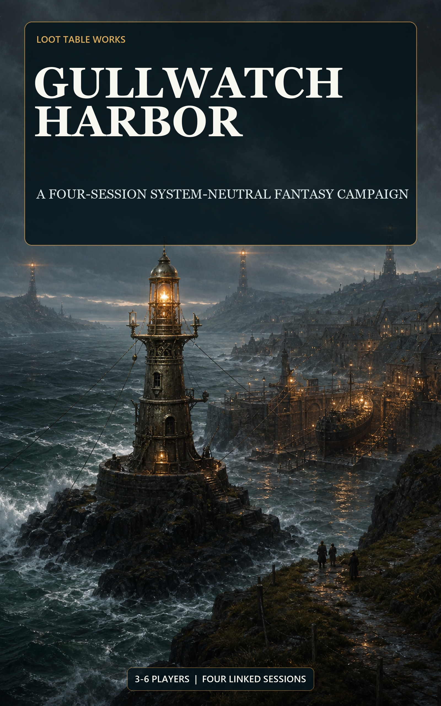

Adventure
Four scenes, three approaches, clocks, scaling, profiles, and consequences.
An abandoned sea beacon is broadcasting a false harbor code. Reach the tower before flood tide and decide which truth the coast will remember.

Continue after the false light
Carry tonight's Beacon outcome into three more linked sessions about stolen relief, drowned evidence, and the charter that will govern the coast. Every ending remains relevant through the finale.
The included adventure is complete. These packs are for building more locations and sessions after Gullwatch.
Build additional tactical locations with objectives, hazards, phases, and alternate resolutions.
View the $3 packConnect locations to concrete objectives, consequences, and rewards.
View the $3 packGive recurring threats coherent rewards and probability-backed outcomes.
View the $3 pack